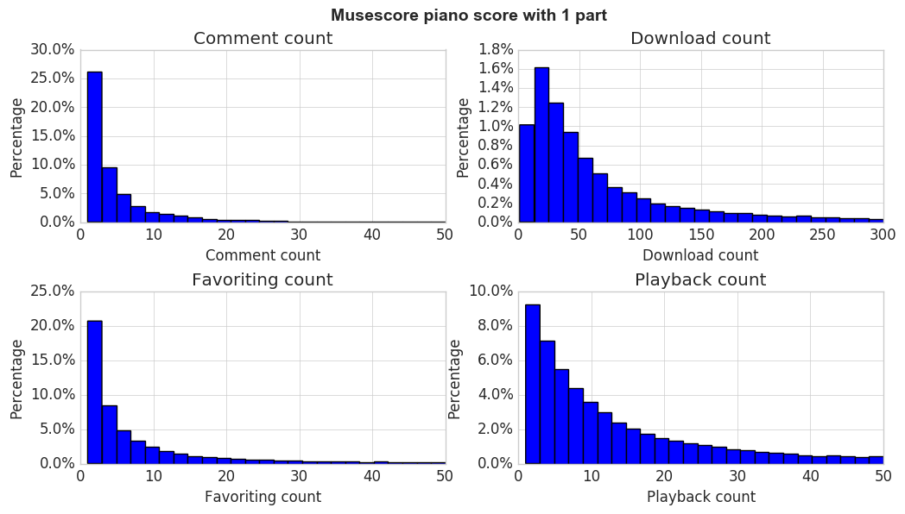
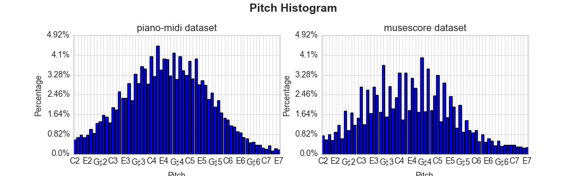
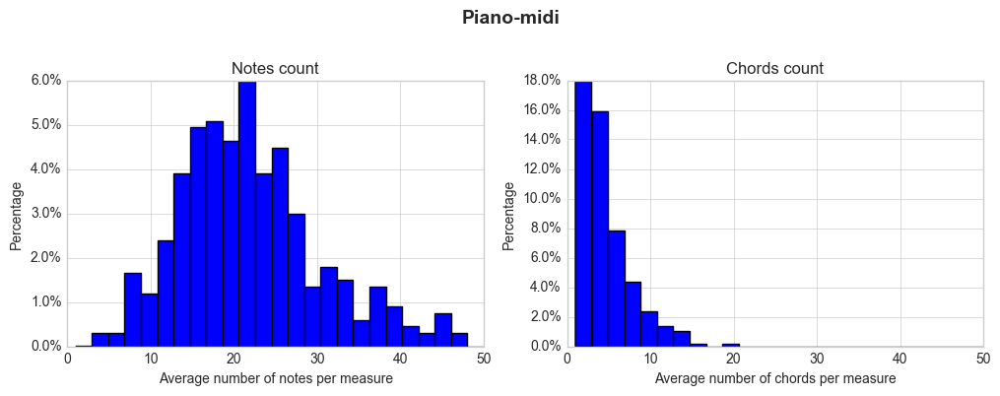
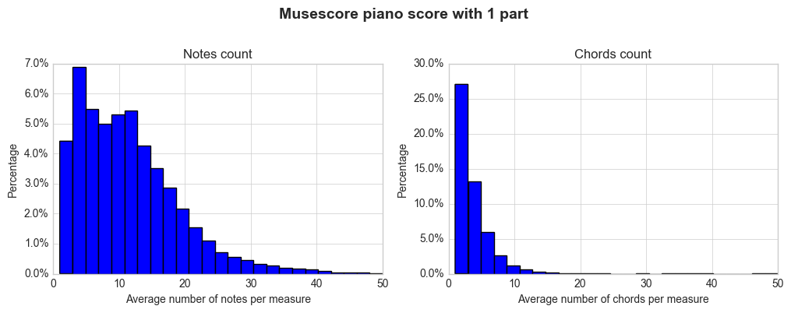
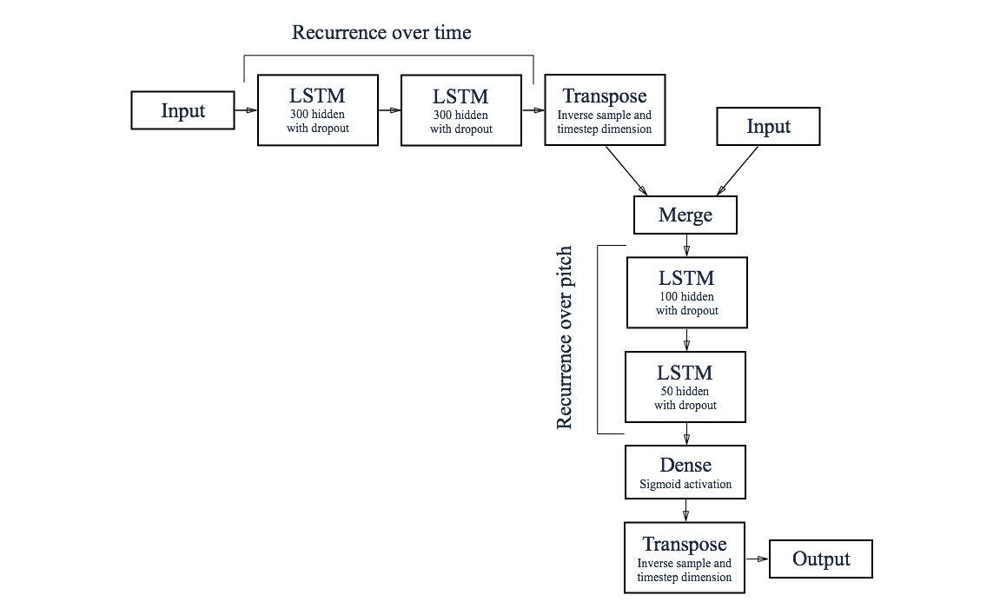
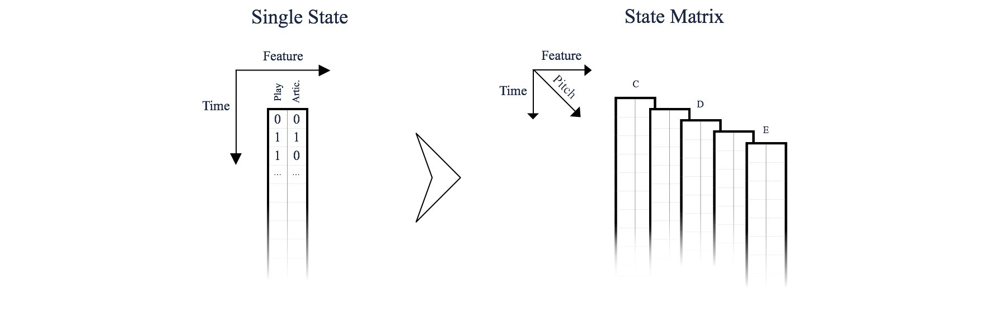
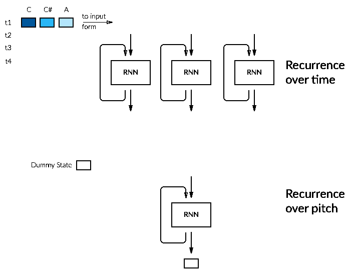
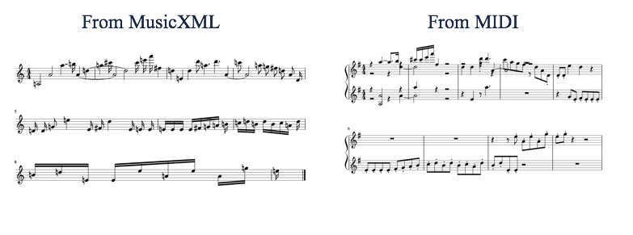

Project realized at Swiss Federal Institute of Technology in Lausanne (EPFL) by Yoann Ponti, supervised by Nathanaël Perraudin and Michaël Defferrard.
The complementary repository can be found here
Neural nets have been used in many different ways during the last few years, from recognition in computer vision to artificial intelligence in games and even music generation. Once a domain reserved to the scientific community, it is now possible without much effort to create your own neural networks (NN) thanks to amazing libraries maintained by the community. Lately some projects related to music generation and composition have emerged, such as the magenta project from Google or the use of deepmind wavenet to generate raw audio waveforms. As music depends on time, most of the models used to generate music rely on some tricks to take account of it. A sliding-window CNN or a FC NN could do it by looking at the previously generated notes, but most of the model we looked at used some kinds of recurrent neural networks (RNN).
An important point is that the vast majority of those projects take only interest in the music generation where the results are to be listened to. Most of them generate a MIDI like output, i.e. the output is related to a decision to play or not a certain note. But, music has at least another side, it has its own language which is transcribed into music sheet. The goal of our project was to take this other path and try to assess the feasibility of generating music scores using RNN.
Before tackling the model creation, it is necessary to build a dataset suitable for training and find the restrictions that are coming with it.
To deal with musicology on a computer we decided to rely on the music21 library. It is well maintained and offers a wide range of possibilities. Of course several other project are available, such as and . Relying on an object-oriented infrastructure to offer a uniform API makes its code clear and reusing existing code simple whatever the underlying score format is. There exists a multitude of score formats, each with their own costs and benefits. A complete list of the format parseable by music21 can be found in their documentation.
One of the most widespread format is MIDI. Even though it is simplified, the MIDI format can be seen as a piano-roll. Just like the one we see in Western movies except that instead of punched holes, we deal with a suite of events in binary format. There is no notion of measure, the speed at which we go through the score is determined by a tempo. To go into a little bit more details, each event is composed by a time-stamp and a status field. The time accumulates for each time stamp (i.e. the time-stamp represents the time offset since the last event) and the status indicates information such as where the note starts playing, ends and at what volume 12.
MusicXML as its name implies is an XML-based file format. The format is proprietary, but can be freely used under a Public License. MusicXML exists in two formats, an uncompressed version .xml and a compressed one .mxl 3. The uncompressed version is easily readable and correspond closely to the music21 representation.
For example,
# MusicXML
<note>
<pitch>
<step>C</step>
<octave>4</octave>
</pitch>
<duration>4</duration>
<type>whole</type>
</note>is represented in music21 by a single object music21.note.Note with its attributes being duration and type. Using an XML based format presents a window of opportunity for representing bits and pieces specific to music sheets such as articulation marks, dynamics, etc. It is widely used for score-writing and is supported by most major software dedicated to this task.
An interesting read for an in depth review of the differences in representations would be the book Beyond MIDI by Eleanor Selfridge-Field.
The dataset was created using musescore.com as it offers an API wrapper and the score library seemed well-filled. Other possibilities encountered were:
We could have worked directly with the piano-midi dataset as we are almost certain that all scores are of good quality. The pieces of this dataset are all from great composer. Unfortunately, as the name implies all the scores are in MIDI format which does not completely fit our needs. There is a lack of information that we might want to use later on in order to generate scores, such as articulation marks.
The related code used in this post can be found on github. You can also find a reference notebook which goes through the followed pipeline or simply use the dataprep files to retrieve MusicXML scores. Due to the implementation of the musecore API, the metadata have to be retrieved first which offers the possibility of choosing beforehand which scores to finally retrieve, thus avoiding unnecessary downloads.
We have two attributes at our disposal to filter the API query.
Here is a minimal working example to retrieve scores from musescore based on the code available on our repository.
import pandas as pd
from utils.dataprep.metadata import *
from utils.dataprep.scores import *
# Retrieve all metadata information into a ms_parts_1_meta.csv file
meta_file = get_metadata('', 'ms_parts_1', parts=1, part=0)
df = pd.read_csv(meta_file)
# Retrieve all score files based on the metadata file
get_scores(df, '', 'ms_parts_1')To determine which score to retrieve, we looked specifically at the self explanatory attributes: '''comment_count''', '''download_count''', '''favoriting_count''' and '''playback_count''' of the metadata. Our expectations were that by looking at how the community reacted to the score, we should be able to determine the quality of a score. A high quality score should have higher values in the attributes mentionned above than a score of lower quality.
Unfortunately, the listed attributes do not contain much information for the large majority of scores. Indeed, as shown in the table and in figure 1, we can see that most of the scores have a low count for each of the parameters. Most of the scores have never been commented, marked as favorite or even played. The only attribute with a more spread distribution is the download count, but it is still difficult to decide on a threshold for inclusion in the dataset.
| count | comments | downloads | favorites | playbacks |
|---|---|---|---|---|
| mean | 1 | 132 | 8 | 35 |
| std | 5 | 381 | 29 | 190 |
| min | 0 | 0 | 0 | 0 |
| 50% | 0 | 45 | 1 | 9 |
| 75% | 0 | 108 | 6 | 26 |
| max | 367 | 23497 | 1383 | 22406 |
Table 1 : Most of the musescore pieces don't reflect a positive reaction from the community with the exception of certain instances.
 Figure 1 : Most of the musescore pieces don't reflect a positive reaction from the community.
Because we couldn't really use the metadata, we tried instead to assess the complexity of a score. Interesting approaches exist such as 4 to deal with such a task, but we decided to take an easier path and looked at the average number of notes and chords per measure. We assumed that the number of notes per measure is a simple indicator of the sounding complexity of a score i.e. a score will be closer to a simple riddle or a piece intended for learning/training (with scale and such) if the number of notes per measure is low.
So, we had to retrieve a bunch of scores. For comparison, we also analyzed the piano-midi.de dataset, which is as stated above composed of well-known pieces from great composer. Just to get a feeling of the dataset, we looked at the pitch distribution. As we might expect, most of the notes are played between the third and fifth octave , i.e. between C3 and B5 (fig. 2).
 Figure 2 : Most of the played notes are located between the third and the fifth octave. (For clarity, some pitch name have been omitted in the axis ticks.)
The musescore dataset seems to be less elaborated than the one found in the piano-midi dataset. This is shown in figure 3, which plots the distribution of the number of notes per measure. The distributions seems to show that most of the scores from the musescore dataset are simple music sheets. This assertion has been confirmed by manual inspection: most of the pieces are simple riddle.

 Figure 3 : A large part of the musescore pieces seems to be on the low end of complexity since they contain only a few notes per measures.
The dataset was finally created by keeping the scores with an average number of note per measure between 3 and 15.
As stated before, music generation should rely on some sort of recurrent neural networks or any other way to model temporal dependencies. A recurrent neural network is a neural network where there exists a cycle between each unit. This has for effect to create an internal state of the network. It means the network assumes that it exists a dependence between each input and perform the computations for every element of a sequence, with the output computed with both the new input and the result of the previous computations. As RNN maintain states, they are good at modeling sequence.
Some improvements have been made along the years such as Long Short-Term Memory (LSTM) and Gated Recurrent Unit (GRU). Those improvements prevent back-propagated errors from vanishing or exploding for example. LSTM and GRU layers are readily available in machine learning packages and can be used as a plug and play. An in-depth review of this kind of neural networks can be found (not limited to) here:
The step was to look at which models already exist, a few of them are listed below:
We first took inspiration from Andrej Karpathy RNN implementation for text generation. His blogpost pushed some people to implement their own version (trained on Obama speeches or Eminem lyrics) and at least one music generation version relying on the abc notation for training.
Our first model follows the approach of stacking up two LSTM layers. Each measure was divided in 16 time-steps and we used a one hot encoding to go from score to feature space. The network is represented in figure 4. The model we took inspiration from was used to generate text. So to be more closely related to it, we only looked at monophonic music. Indeed, for text generation, only one letter is generated at a time which corresponds to one note per time-step in our model. The training set was created by concatenating every scores with an END token interposed between each score. We then cut this long piano-roll into segments of length 128 corresponding to 8 measures with a 4/4 time signature. The example of the pianoroll representation can be found in figure 5. The segments were finally shuffled before being fed to the neural network for training.
Figure 4 : Visual summary of the model composed of two LSTM layers.
Figure 5 : Pianoroll representation of the music pieces used in the first network.
The model learned to generate somewhat pleasing series of notes and to generate correctly the END` token. A sample from the first epoch can be compared to a sample generated after the 30 epochs.
The network seems to have learned to avoid jumping from one octave to another and tries to create plausible progression. Below you can find the music sheet representation for the second sample based on the output of the network without any post processing. Unfortunately this model is limited to monophonic music and there are still some problems with some note than are out of the current musical scale.
Figure 5 : The raw output is missing some features such as key signature to be more readable.
Even tough the network produces something relatively interesting, there is room for improvement. The first change would be allowing the network to generate polyphonic music. One of the ways to achieve this goal would be to change how the decision to generate a note is made. We could trade the softmax to a sigmoid for example. If we look at the generated score, we can already see it is only a series of notes. It should be possible to make the score more readable by trying to extract a key signature or simply by removing the natural key. A possible result that might be achievable using post-processing can be seen in figure 6, but this is more engineering than machine learning.
Figure 6 : Some processing on the raw output make the music sheet more readable and understandable.
Instead of letting the network learn everything for itself we can try to use our musical knowledge to build the network in a more clever way. The next iteration tries to bring more properties into the network and the feature space used. For example we bring a notion of time, the fact that playing a C twice should be different from holding a single C or that each note has a relation with the one around them. We stumble upon Daniel Johnson's post about music composition and decided to get inspiration from it.
To summarize, the model relies on two networks of stacked LSTM layers. The first one does the recurrence over time (time RNN) and the second one does it over pitch (pitch RNN). The second network uses the output of the first one (can be seen as a "time pattern") concatenated with the state of the last time step. The second network then scans up from low notes to high notes. We thus have a transposition of dimension in the middle of the network between the time axis and the pitch axes. The model is depicted in figure 7.
 Figure 7 : Visual summary of the model composed of two RNNs doing the reccurence over time and pitch.
As before, we are not able to work directly with the musicXML format. In the first network, the scores were processed to form a piano-roll embedded in two dimensional space (fig. 5). Now, we use a three dimensional space (pitch, time-step, features) (fig. 8) to ease the transposition in the middle of the network. The most simple features space is composed of the play status and the articulation status of the note. Indeed, to be able to reconstruct the score we need a least to know when a note starts playing and when it stops. Thus, each pitch is encoded in its own single state, the single states are then stacked together to form the statematrix.
 Figure 8 : Statematrix representation of the music pieces used in the second network.
The statematrix is further processed into an input-form to make the available feature space more rich. In the time network, each state of the statematrix is fed independently to the RNN. In order to obtain some sort of a time pattern for each pitch we have to bring some information about its surroundings by doing some feature engineering. The input-form can be seen as four concatenated parts. The first one called position encodes the pitch value of a note (based on MIDI pitch values transposed to start at zero). The pitch class is used to determine the position of the note in the chromatic scale and it is based on a zero one encoding. The position and pitch class features taken together enable the network to find in which part of the musical scale the note is situated. The context is given by the previous vicinity and the previous context. The big part of the input space is taken by the previous vicinity. It contains the state of the staff at a specific time, looking one octave up and octave down from the pitch being processed. On the other hand, the previous context is related to the pitch class attribute and encodes how many times a pitch of the chromatic scale is played at the same time, it is computed starting at the pitch of interest. Thus, it also encode the distance between the pitch played at the same time. This gives the neural net. information about chords and what notes can and should be played simultaneously. Finally, the network is given a notion of time with the beat part which consists of a binary representation of the position of the note in the measure (i.e. from 0 to 15). Taken altogether, we end up with an input space of 80 features.
Let's say we look at the following score and for the encoding we assume that only B4 and C5, respectively 71 and 72 in MIDI can be represented
The state-matrix would be the following:
[
[
[ 1., 1.], # State of the B4 pitch at time step 1, i.e. played
[ 0., 0.] # State of the B4 pitch at time step 2, i.e. not played
],
[
[ 0., 0.], # State of the C5 pitch at time step 1, i.e. not played
[ 1., 1.] # State of the C5 pitch at time step 2, i.e. played
]
]and the input form, the state of the note is put in bold in the previous vicinity to ease the reading of the long binary representation:
| Time step 1 | ||
|---|---|---|
| B4 | position (1) | 0 |
| pitch class (12) | 000000000001 | |
| previous vicinity (50) | 000000000000000000000000 11 000000000000000000000000 | |
| previous context (12) | 100000000000 | |
| beat (4) | 0000 | |
| C5 | position (1) | 1 |
| pitch class (12) | 100000000000 | |
| previous vicinity (50) | 000000000000000000000011 00 000000000000000000000000 | |
| previous context (12) | 000000000001 | |
| beat (4) | 0000 | |
| Time step 2 | ||
| B4 | position (1) | 0 |
| pitch class (12) | 000000000001 | |
| previous vicinity (50) | 000000000000000000000000 00 110000000000000000000000 | |
| previous context (12) | 010000000000 | |
| beat (4) | 0001 | |
| C5 | position (1) | 1 |
| pitch class (12) | 100000000000 | |
| previous vicinity (50) | 000000000000000000000000 11 000000000000000000000000 | |
| previous context (12) | 100000000000 | |
| beat (4) | 0001 | |
Table 2 : Example of input form
A more in-depth description of the base model is available on the original model blogpost.
The next few lines will point out how the model was trained and how the score were finally generated. Due to the nature of the network, the training was separated into two phases. First, the statematrix expanded into input-form is fed to the time network where each single state pitch is processed independently of each other. Keeping in mind that we know in advance the whole score, we can do the recurrence over each time-step one after the other and obtain an output (time pattern) for each pitch at each time-step. The time patterns are then concatenated with the statematrix. Afterwards, the pitch and time dimensions are transposed such that the second RNN (pitch network) can do its recurrence along the note axis which scans up from low notes to high notes. Finally, after the last RNN layer there is a non-recurrent output layer that outputs two values: the play probability and the articulation probability such that we obtain a statematrix. The cross entropy is then used as the loss function with masking based on play decision, i.e. there is no penalty if the network decides that the note should be articulated, but has decided not to play it.
The generation is a bit more complicated as we don't know in advance which notes are played. In the original network, it was done by using a single time-step as seed. We modified it to cope with seeds of any length. The seed is fed to the time network to prepare its hidden state. There is no need to run the pitch recurrent network as it is reset after every time-step.
The score has to be generated incrementally due to the recurrence over pitch which can only be done when the pitch is one half tone lower than the one we look to try has been generated. An example of generation is depicted in Figure 9 which displays a simplified version with only three pitches. The seed is in blue and of length 1.
 Figure 9 : Generation of three timesteps based on a seed of length 1. As note are not known in advance only the time recurrence can be done in one pass for each timestep.
For each time-step ''t'', the time RNN is run for one tick. Doing the pitch recurrence is the tricky part as we need to know the state of the pitch one half tone lower to generate the state of any new pitch. So, we start with a dummy state representing a fictitious one half lower tone, which is concatenated to the output of the time RNN corresponding to the lowest pitch. It is then fed to the pitch network and produces the play state for the lowest pitch at time ''t+1''. This new state is then "injected" back to determine the next pitch until the full recursion over all pitches is done. The cycle can then go through another iteration by running the time network for one other tick using as input the new statematrix at time-step ''t+1''. This continues until the number of time-steps required have been generated. Then, to obtain a score, we transform the newly created statematrix into a music21 stream that can be saved to disk.
A first step in augmenting the capacity of score generation of the network, is to add articulation marks. Indeed, the marks are note related and can be introduced as an augmentation of the state matrix. A one hot encoding is required as multiple marks can be imposed to a single note. Two approaches have been tested:
Use a sigmoid activation: The decision of adding an articulation mark or not is taken by looking at the probability returned by a sigmoid activation.
Use a softmax activation: The feature space is augmented again by indicating not only if an articulation mark is present but also if it is not, using one hot encoding. The decision can now be made by relying on a softmax on each pair of features representing an articulation mark.
Due to the lack of presence of articulations in the dataset, no probable results were obtained. Probably because the network has not encountered enough meaningful example containing such articulation marks. A second augmentation could be dynamics. They are more complicated to introduce as they are not related to any specific note but to a specific number of times-steps and the current model design might to be a good fit for that.
Here is a selection of some audio output of the network
Exporting the statematrix directly to MusicXML is feasible. However, it won't be interpreted correctly by editing software (such as musescore). Notes will be put one after the other such that no chord nor voice will be created even though they might be played at the same time. So, we have to go through MIDI to obtain a relatively readable score as it doesn't need an indication of voices nor parts (Fig. 10) Unfortunately, this brings us back to square one.
 Figure 10 : Raw output from the second network is not represented correctly in MusicXML due to the polyphonic nature of the generated pieces. On the other hand, the midi export is readable due to the creation of multiple part.
As for the first network, the limitations are encountered during the creation of the score. The fact that the network now creates polyphonic pieces even increases the difficulty to obtain a visually valid partition as it becomes more and more difficult to assess where each note should go. The clear limitation brought by first looking at generating good sounding music then at generating visually pleasing score is that the creation of the score misses a lot of information. As shown by those networks, trying to reuse models intended to do a slightly different task might not be the best solution and as hypothesized since the beginning, finding a good representation is the hardest part in building neural networks for modalities they have not been developed for. An interesting approach on the problem has been realized by Gaëtan Hadjeres and François Pachet in one of their publications5. Indeed, the biggest problem encountered during the score building is that we don't know in which voice the note should be put. Their approach is to let their model decide in which voice should each note be. Which Resolves the problem by only working with monophonic which are concatenated to obtain a polyphonic score. Definitely worth exploring in a futur project.